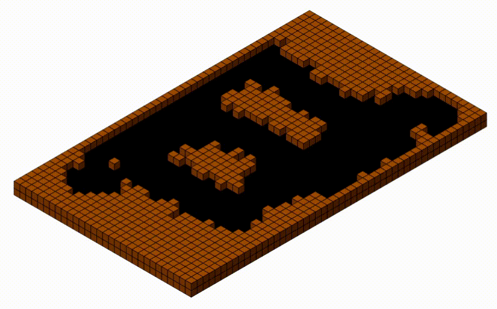
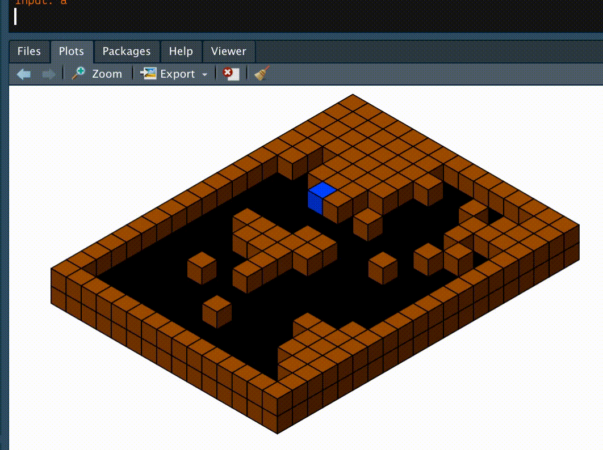
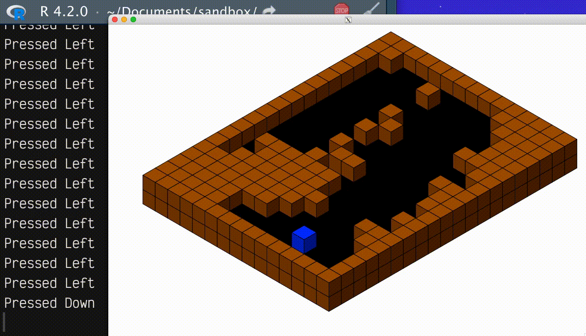
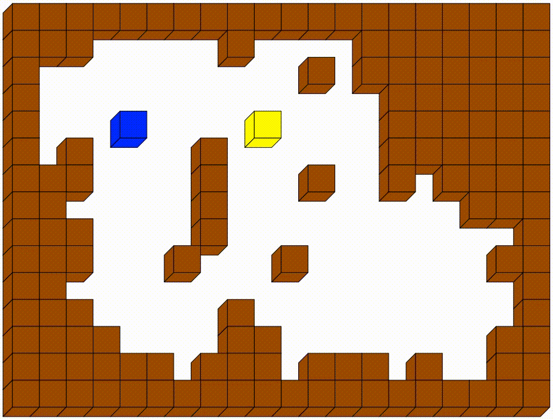
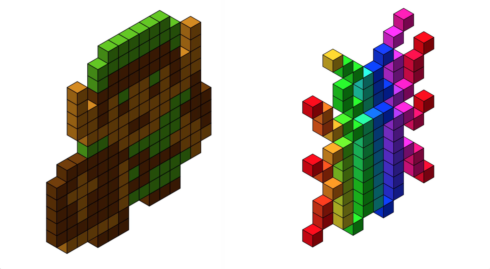

coords <- isocubes::coords_heightmap(dungeon_h, col = dungeon_c)
cubes <- isocubes::isocubesGrob(
coords,
max_y = ncol(dungeon_h) + 0.1 * ncol(dungeon_h),
fill = coords$col,
xo = 0.7
)
grid::grid.newpage() # 'clear'
grid::grid.draw(cubes) # render
tl;dr
I made an interactive isometric-dungeon demo in R, thanks to {r.oguelike} for dungeon building and mikefc’s {isocubes} for drawing isometric cube graphics and {eventloop} for continuous keypress inputs.
A new dimension
Mike (AKA mikefc, AKA coolbutuseless) is well known for off-label R creations that desecrate the assumption that ‘R is a language for statistical computing’.
Mike revealed the {isocubes} package recently, which lets you print objects made of isometric cubes to a graphics device. I immediately thought of the toy {r.oguelike} package I’ve been developing recently, which has the goal of creating (really) basic features of a roguelike game in R.1 The dungeons are currently ASCII tiles printed to the console. How would it look in isometric?
In a frenzied series of tweets, I built up a little toy that creates a procedural isometric dungeon and adds a user-controlled player character and a pathfinding enemy. The steps were to:
- Build an isometric dungeon (tweet)
- Add a player (tweet)
- Accept continuous input (tweet)
- Add a pathfinding enemy (tweet)
This post talks through those steps. You can find the code for the final product in a GitHub Gist. It is absolutely not polished and really is just a Frankenstein’s monster of code that I stapled together.
1. Build an isometric dungeon
{r.oguelike} creates procedural dungeons in the form of a matrix where # symbols are non-traversable wall tiles and . indicates traversable floor tiles. I wrote about the inception of the package in a recent blog post.
We can swap the characters for height values, where the floor is 1 and the walls are 2, and {isocubes} will project the walls one cube above the plane of the floor. We can also use this information to provide colours; black for the floor and brown for the walls, for example, so it looks like a cavern.
Here’s a few examples:

I think that looks pretty good (ignore the graphical artefacts from the gif compression). I didn’t time how long it took for each image to be rendered because it was near-instantaneous.
But we don’t want to just look at pictures of dungeons, we want to explore them.
2. Add a player
{r.oguelike} lets a user move a character around the the floor tiles. The player is represented by @ in the dungeon matrix, which we can again substitute with a height value of 1 so it’s one cube higher than the floor. Of course, we should colour it to distinguish it from the walls; I chose blue.
The user’s keyboard input is accepted by readline() and this determines the character’s movement. Typing W then Enter will make the player move north one tile, for example. In {r.oguelike}, a keypress input causes the current location to be overwritten with a floor tile (.); the tile above to be replaced with the player symbol (@); and then the updated matrix is re-printed to the console.
Again, this all takes place inside the matrix that represents the dungeon, so we can also just lift this functionality into the {isocubes} version. Here you can see a series of user inputs to the console that result in the player moving around the floor tiles.

It was really pleasing when I got this to work, but it’s also quite tedious to tap in a key and hit enter for each movement.
3. Accept continuous input
{r.oguelike} simply prints the dungeon matrix to the console at the end of each turn, whereas our {isocubes} version takes place in a graphics window that’s refreshed with every turn.
Mike also has a package called {eventloop},2 which he suggested might be useful for continuous input from the user. The package contains:
a framework for rendering interactive graphics and handling mouse+keyboard events from the user at speeds fast enough to be considered interesting for games and other realtime applications
Bear in mind that it doesn’t work on Windows. Read more about it in Mike’s blog.
Here you can see the result of incorporating {eventloop}. The user is pressing the arrow keys—which you can see being printed to the console—to move the player. This is way more seamless than the previous readline() method.

This is a nice demo, but it would be great to make this more of a ‘game’.
4. Add a pathfinding enemy
{r.oguelike} has an enemy character, represented in the dungeon matrix as E. Again, we can replace this with a height of 1 and colour it yellow, for example.
I wrote recently about implementing simple breadth-first pathfinding so that the enemy can head toward wherever the player currently is. At time of writing I haven’t fully implemented the pathfinding into {r.oguelike}, but that didn’t stop me adding it into the code for this isometric demo.
Here you can see the enemy cube (yellow) hunting down the player-controlled cube (blue). I was motivated to add a capture condition and decided to have fun with it.
I hope you enjoyed the victory dance at the end of the gif (it was the best I could do with the limited graphics).3
ℹ️ Update
After this post was published, the {oblicubes} package was published by Trevor L Davies. It allows you to use oblique projections. So obviously I had a go with {r.oguelike}.

Click for the required code changes.
In the code I wrote, you pretty much replace:
With:
coords <- oblicubes::xyz_heightmap(
dungeon_h,
col = dungeon_c,
scale = 0.3,
ground = "xy"
)
grid::grid.newpage() # 'clear'
oblicubes::grid.oblicubes(coords) # renderThe fourth dimension
I need to tie up some loose ends in the current version of {r.oguelike}, but I’m considering the possibilities for {isocubes} and {eventloop} in future. Maybe the start_game() function could have an argument where the user can choose 2D or 3D (isometric or oblique) representations of the game.
I also have a few ideas of how I can use my basic {r.oguelike} ‘engine’ with {isocubes} to develop some other, non-roguelike games. For example, Dmytro (AKA Deemah) suggested {rsokoban}. Sokoban is a game where you solve small tile-based puzzles by pushing crates onto designated spots. I was also reminded of Q*bert, where you try and touch all the floor tiles to change their colour.
So many ideas for off-label R use, so little time.
Postscript
I lied a bit earlier. The actual first thought I had when seeing {isocubes} was pixel art. I wrote a post (exactly) one year ago where I converted some vectors into little pixel drawings using R’s image() function.
It’s fairly straightforward to convert those vectors into a format accepted by {isocubes}, which means you can have an isometric sprite of Link from The Legend of Zelda, or a rainbow version of the insect logo for this blog.

I wrote a GitHub Gist with the code for these images, so feel free to steal. Let me know what you end up making.
Environment
Session info
Last rendered: 2023-07-06 19:27:28 BSTR version 4.3.1 (2023-06-16)
Platform: aarch64-apple-darwin20 (64-bit)
Running under: macOS Ventura 13.2.1
Matrix products: default
BLAS: /Library/Frameworks/R.framework/Versions/4.3-arm64/Resources/lib/libRblas.0.dylib
LAPACK: /Library/Frameworks/R.framework/Versions/4.3-arm64/Resources/lib/libRlapack.dylib; LAPACK version 3.11.0
locale:
[1] en_US.UTF-8/en_US.UTF-8/en_US.UTF-8/C/en_US.UTF-8/en_US.UTF-8
time zone: Europe/London
tzcode source: internal
attached base packages:
[1] stats graphics grDevices utils datasets methods base
loaded via a namespace (and not attached):
[1] htmlwidgets_1.6.2 compiler_4.3.1 fastmap_1.1.1 cli_3.6.1
[5] tools_4.3.1 htmltools_0.5.5 rstudioapi_0.14 yaml_2.3.7
[9] rmarkdown_2.23 knitr_1.43.1 jsonlite_1.8.7 xfun_0.39
[13] digest_0.6.31 rlang_1.1.1 evaluate_0.21 Reuse
CC BY-NC-SA 4.0